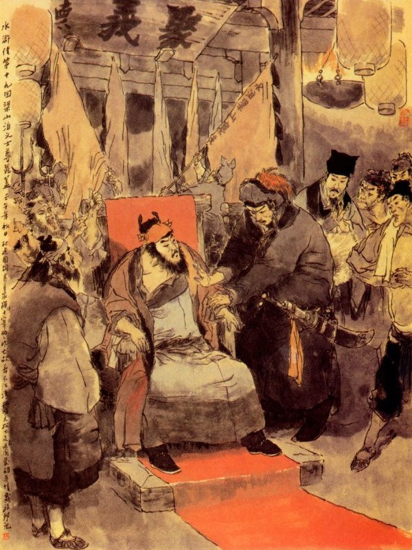
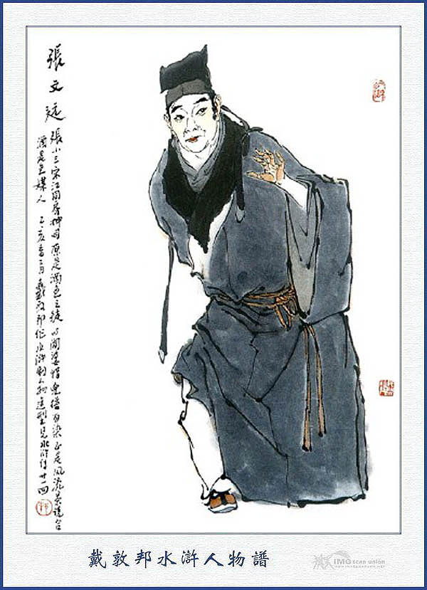
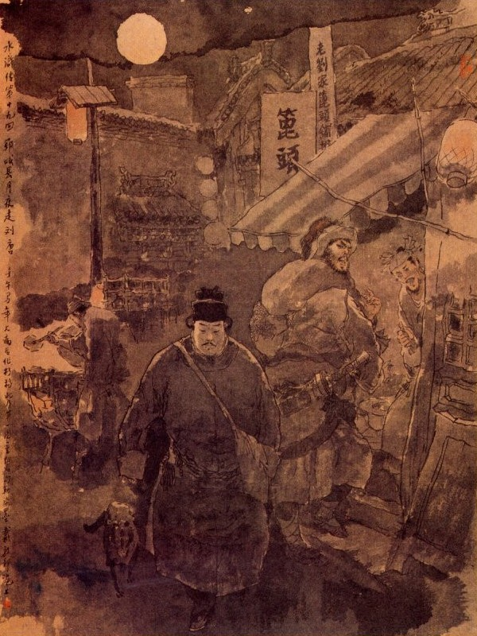

Bấy giờ Lâm Xung vất đầu Vương Luân xuống rồi một tay cầm đao nhọn trỏ vào mọi người mà nói rằng:
- Tôi tuy là một kẻ cấm binh bị tội lưu lạc đến đây, song ngày nay thấy các vị hào kiệt có lòng hạ cố đến ở sơn trại cho vui, thế mà Vương Luân nỡ đem tâm địa hẹp hòi, ghen ghét tài đức, không chịu lưu giữ các ngài, nhân thế tôi phải tính trước hắn đi, chứ thực không có bụng gì mưu đồ ngôi chủ trại. Cứ như cầm đầu thì tôi cũng không khi nào cự địch quan quân, chỉ mong có một ngày kia trừ bỏ những tên tâm địa độc ác ở bên cạnh nhà vua đi, thế là thoả chí. Nay nhân có Tiều huynh là một người trọng nghĩa khinh tài, trí dũng gồm đủ, thiên hạ ai ai nghe thầy cũng phải phục theo, vậy tôi xin lấy nghiã khí làm trọng mà lập lên làm chủ trại, ở đây, các ngài nghĩ thế nào, có xứng đáng không?
Chúng nghe nói đều đáp rằng:
- Đầu Lĩnh dạy thế là phải.
Tiều Cái thoái thác rằng:
- Không thế được, xưa nay dẫu khách giỏi đến đâu cũng không nên chiếm quyền chủ, tôi đây là một người khách mới đến, khi nào dám chiếm ngôi trên!
Lâm Xung nhất định không nghe, sấn lại kéo Tiều Cái đẩy vào ghế rồi nói lên rằng:
- Bây giờ việc đã đến nơi, không cần phải từ chối, nếu không nghe lời tôi thì cứ lấy Vương Luân làm phép.
Nói xong cố dìu Tiều Cái ngồi lên ghế rồi quát bảo mọi người ra trước đình làm lễ mừng. Nhất diện bắt tiểu lâu la về đại trại mở yến hội, nhất diện cho đem xác Vương Luân đi chôn và nhất diện sai đến trước núi sau gọi tất cả các tiểu Đầu Mục về Tụ Nghĩa Sảnh ở Đại Trại. Đoạn rồi Lâm Xung với mọi người, mời Tiều Cái cùng lên kiệu ngựa đi đến Tụ Nghĩa Sảnh. Khi tới nơi Tiều Cái vào ngồi ở ghế chính trung, đốt một lò hương để vào gian giữa rồi Lâm Xung đến trước mặt mà nói rằng:

- Lâm Xung tôi là kẻ thất phu thô mãng, không có học hành tài đức gì, nay may có các vị hào kiệt đến đây đã rạng tỏ được đại nghĩa trong sơn trại, không còn cẩu thả như xưa nữa. Vậy nhân có Ngô Học Cứu tiên sinh đây, xin tiên sinh nhận chức quân sư để giữ binh quyền, sai bảo tướng tá mà vào ghế thứ nhì cho.
Ngô Dụng vội từ chối mà rằng:
- Tôi là anh học trò thôn quê, trong bụng dầu có tài kinh luân tế thế, dẫu xưa cũng từng được qua Binh Pháp Tôn, Ngô, song chưa có chút là công lao gì, lẽ đâu dám chiếm ngôi trên?
Lâm Xung nói:
- Việc đã đến nơi, không cần khiêm nhượng, tiên sinh phải ngồi.
Ngô Dụng phải nghe lời, ngồi vào ghế ngồi thứ hai. Lâm Xung nói:
- Công Tôn Thắng tiên sinh, xin ngồi vào ghế thứ ba.
Tiều Cái không thuận, bảo Lâm Xung rằng:
- Làm thế không được, nếu cứ suy nhượng mãi thì Tiều Cái tôi xin thoái vị.
Lâm Xung nói:
- Tiều huynh lầm rồi, Công Tôn Thắng tiên sinh là người có tiếng, xưa nay giỏi nghề dùng binh, lại có phép gào mưa gọi gió, biến hiện quỷ thần, anh em đã ai theo kịp?
Công Tôn Thắng khiêm tốn mà rằng:
- Tôi dẫu có chút phép thuật tầm thường, song không có chi là tài tế thế mà dám ngồi trên, vậy xin Đầu Lĩnh ngồi cho.
Lâm Xung lại nói:
- Cứ xem một trận đánh được quan quân thì đủ biết diệu pháp của tiên sinh. Tiên sinh ngồi đây chính như bộ đỉnh ba chân khuyết một chân không được, xin tiên sinh đừng từ chối nữa.
Công Tôn Thắng không từ chối được, đành phải nghe lời ngồi ghế thứ ba.
Bấy giờ Lâm Xung lại toan nhường nữa. Tiều Cái, Ngô Dụng và Công Tôn Thắng nhất định không nghe nói rằng:
- Vừa rồi Đầu Lĩnh bầu cho tam phân đỉnh túc, chúng tôi đã xin vâng lời, tạm ngồi ba ghế trên rồi, nay đến Đầu Lĩnh còn nhường cho ai nữa thì chúng tôi ba người xin nhất định thoái cả.
Nói xong ba người dìu Lâm Xung ngồi lên ghế thứ tư. Đoạn rồi Tiều Cái nói rằng:
- Bây giờ xin hai Đầu Lĩnh Đỗ, Tống ngồi lên cho.
Đỗ Thiên, Tống Vạn không nghe, liền nhường để Lưu Đường ngồi vào ghế thứ năm, Nguyễn Tiểu Nhị thứ sáu, Nguyễn Tiểu Ngũ thứ bảy, Nguyễn Tiểu Thất thứ tám rồi Đỗ Thiên thứ chín, Tống Vạn thứ mười, Chu Quý thứ mười một. Bấy giờ mười một vị ở Lương Sơn Bạc yên định chỗ ngồi rồi trước núi sau núi tất cả bảy tám trăm lâu la, đều vào lạy mừng mà chia đứng hai hàng ở dưới. Tiều Cái nói với chúng rằng:
- Các ngươi nghe lệnh đó, ngày nay Lâm Giáo Đầu cho tôi lên làm chủ trại ở đây, Ngô Học Cứu làm chức quân sư, Công Tôn Thắng cùng coi giữ binh quyền, Lâm Giáo Đầu cùng cùng các đầu lĩnh quản trị sơn trại, còn các ngươi ai nguyên chức ấy, theo phận mà làm, coi sóc các công việc đằng trước đằng sau, giữ các chốn trong trại ngoài bến chớ có để sơ suất điều chi. Các ngươi phải nên hết sức cùng lòng mà gây nên đại nghiệp với nhau mới được. Đoạn rồi sai thu dọn hai bên phòng xá để cho lão tiểu hai nhà họ Nguyễn ở và đem các đồ châu báu sinh nhật còn lại, cùng các thứ kim ngân tài bạch của nhà đem đến, để thưởng các Tiểu Đầu Mục và các tụi lâu la. Lại giết trâu giết ngựa tế lễ thiên địa thần minh rồi mở tiệc mừng, cùng uống rượu với nhau mãi đến đêm mới nghỉ. Trong mấy ngày hôm sau lại bày tiệc luôn để khao thưởng trên dưới rất là vui vẻ.
Bấy giờ Tiều Cái, Ngô Dụng cùng các vị đầu lĩnh mới kiểm điểm kho đụn, sửa sang sơn trại, chế tạo các đồ quân khí, thương đao cung tên, mũ giáp thuyền bè và luyện tập các quân lính thủy thủ tập đánh trên thuyền, để phòng bị khi quan quân kéo đến. Cách ít lâu, một hôm Lâm Xung thấy Tiều Cái trọng nghĩa sơ tài cư xử rộng rãi, đãi vợ con các người khác đều được chu tất thì trong bụng chợt nghĩ đến vợ mình là Trương Thị ở Đông Kinh, ngày nay sống chết thế nào chưa biết, chàng liền đem tâm sự bầy giải với Tiều Cái rằng:
- Tôi từ khi lên Lương Sơn, đã có ý mang cả vợ con lên đây một thể, nhưng về sau thấy Vương Luân là một người tâm địa hẹp hòi, cho nên trong lòng do dự lại thôi. Tới nay vợ con vẫn còn lưu lạc ở Đông Kinh, không biết rằng có còn sống được hay không!
Tiều Cái nghe nói liền bảo rằng:
- Nếu hiền đệ, còn bảo quyến ở Đông Kinh thì sao không sai người đi đón về đây? Hiền đệ khá viết một phong thư cho người đi mau mau lập tức về Đông Kinh mà đón ngay mới được.
Lâm Xung vâng lời lập tức viết thư rồi sai hai tên lâu la thân tín mang về Đông Kinh để đón.
Cách hai tháng trời đã thấy hai tên lâu la trở về báo rằng:
- Chúng tôi đi đến Đông Kinh vào ngay trong thành, hỏi thăm tới nhà Trương Giáo Đầu thì thấy nói là Nương Tử bị Cao Thái Úy bức bách, đã liều thân tự ải từ hai năm về trước. Trương Giáo Đầu thì vì lo nghĩ phẫn uất rồi vào khoảng nửa tháng nay cũng mắc bệnh mất rồi, duy còn có một người con hầu là Cẩm Nhị thì hiện đã gả chồng mà cùng nhau ở đó. Các lân bang gần quanh ai ai cũng đều nói như thế cả, vậy xin báo để Đầu Lĩnh biết.
Lâm Xung nghe nói thì tầm tã nhỏ đôi hàng lụy rồi từ đó trong lòng không còn vương vấn việc nhà chi nữa. Tiều Cái thấy chuyện như vậy thì cũng bùi ngùi tỏ dạ cảm thương. Đoạn rồi từ đó trong sơn trại chỉ hằng ngày thao luyện binh mã chiến thuyền, để phòng khi cự địch quan quân.
Một hôm các Đầu Lĩnh đương họp nhau bàn việc ở trên Tụ Nghĩa Sảnh, chợt thấy tiểu lâu la vào báo rằng:
- Phủ Tế Châu sai điểm hơn hai nghìn binh mã và các thuyền lớn nhỏ có tới bốn năm trăm chiếc, hiện đương đóng ở quãng hồ rộng ngoài thôn Thạch Kiệt, xin vào báo để các ngài biết. Tiều Cái nghe báo cả kinh bàn với quân sư Ngô Dụng rằng:
- Quân quan đến đó, ta nghĩ cách nghinh địch thế nào cho được?
Ngô Dụng cười mà đáp rằng:
- Huynh trưởng bất tất phải nghĩ, khắc tôi đã có cách để đối địch. Xưa nay thường nói: "Nước đến đất ngăn, binh lâm tướng đón" ngại chi.
Nói đoạn gọi ba anh em họ Nguyễn đến, ghé vào tai dặn rằng: Như thế, như thế. Rồi lại gọi Lâm Xung, Lưu Đường đến mà bảo rằng:
- Hai các ông cứ thế này, thế này.
Đoạn rồi lại gọi cả Đỗ Thiên và Tống Vạn đến mà phân phó cẩn thận rồi ai nấy phụng mạng ra đi.
Nguyên quan Phủ Tế Châu, sai một viên Đoàn Luyện sứ là Hoàng An và một viên Bộ đạo quân đem hơn một nghìn người và bắt tất cả các thuyền ở trong hạt, đem hết đến hồ Lương Sơn Bạc. Bấy giờ Đoàn Luyện sứ Hoàng An đem quân lính xuống thuyền, mở còi nổi hiệu thẳng xông đến Kim Sa. Khi gần đi đến bến, chợt thấy tiếng véo von văng vẳng đưa lại bên tai. Hoàng An liền nói:
- Đấy có phải tiếng hoạch dốc (Ống sáo của lâu la) đấy không? Hãy cắm thuyền lại xem sao?
Nói xong vừa dừng lại thì bỗng thấy trên mặt nước có ba chiếc thuyền vừa đi đến. Mỗi thuyền đều có năm người, bốn người cầm chèo và một người ngồi mũi thuyền, cùng đầu đội khăn hồng, mình mặc áo hồng thêu hoa tay cầm câu neo cả. Khi đó có người nhận biết, nói với Hoàng An rằng:
- Ba người ngồi ba mũi thuyền, chính là Nguyễn Tiểu Nhị, Nguyễn Tiểu Ngũ và Nguyễn Tiểu Thất đó.
Hoàng An nghe vậy vội truyền rằng:
- Chúng bây hãy hết sức tiến lên, bắt ba thằng giặc ấy cho ta.
Nói đoạn hai bên có đến bốn năm mươi chiếc thuyền, đều hò reo mà chèo sấn đến. Ba chiếc thuyền kia thấy vậy, liền huýt còi lên hiệu rồi quay ngoắt trở lại. Hoàng An cầm thương trong tay vung lên mà bảo rằng:
- Mau giết chết mấy thằng giặc kia đi, ta sẽ trọng thưởng cho các ngươi.
Ba thuyền kia cứ lẳng lặng mà chèo đi, không nói gì cả. Thuyền quan quân đuổi riết đến sau rồi đem cung tên ra bắn. Ba anh chàng họ Nguyễn lại giơ da thanh Hồ lên để đỡ tên mà chạy. Thuyền sau hết sức đuổi theo, ước chừng được hai ba dặm nước thì chợt thấy đằng sau Hoàng An có một người bơi thuyền nhỏ đi vun vút mà bảo rằng:
- Chớ nên đuổi nữa! Chúng tôi vừa lúc nãy xông vào, bị họ đánh đuổi xuống nước cướp mất cả thuyền rồi.
Hoàng An ngạc nhiên hỏi:
- Làm sao lại bị chúng như thế được?
Người kia nói:
- Chúng tôi đương chèo thuyền vào, chợt thấy đằng xa có hai chiếc thuyền, mỗi thuyền có năm người đi đến, chúng tôi liền gắng sức đuổi theo. Khi đuổi được ba bốn dặm trên mặt nước thì thấy xung quanh toàn là cảng hẹp mà lại có tới bảy tám chiếc thuyền trổ ra rồi cung tên bắn xuống như chuồn chuồn không sao đánh được, bất đắc dĩ phải lui thuyền trở lại, dè đâu trở lại đến chỗ cảng hẹp thì thấy trên bờ có tới hai ba mươi người, cầm một đoạn thừng rất to căng ngang mặt nước. Chúng tôi đương toan đến xem cái thừng thì bị trên bờ ném đá xuống rào rào như mưa, ai nấy phải nhảy thuyền bỏ xuống nước để trốn. Đến lúc trốn về được tới bờ thì đã thấy bao nhiêu quân lính giữ ngựa, đều bị chúng giết chết trên mặt nước mà lấy mất cả ngựa. Vì thế nên phải vội vàng ra khóm lau tìm được chiếc thuyền để đến báo Đoàn Luyện hay.
Hoàng An nghe đoạn ngẩn người kêu khổ rồi phất cờ trắng bảo quân sĩ quay trở về mà không đuổi nữa. Các thuyền được lệnh vừa quay mũi thuyền trở lại thì đã thấy ba chiếc thuyền lúc nãy, dẫm mười mấy chiếc thuyền nữa, mỗi thuyền cũng chỉ có năm người, tay phất cờ đỏ, miệng thổi khẩu hiệu, quay lại đuổi riết quan quân. Hoàng An thấy vậy cũng toan dàn thuyền ra để đón đánh thì lại thấy trong đám ngàn lau có tiếng pháo nổ rồi bóng cờ đỏ phất phới cả một lượt. Đoạn rồi mấy chiếc thuyền đuổi theo sau gọi lên rằng:
- Hoàng An để đầu lại đấy.
Hoàng An kinh sợ hết sức chèo thuyền, đến bên cạnh bờ lau, lại bị bốn năm mươi chiếc thuyền ở tiểu cảng hai bên bắn ra tua tủa như ném gạo vậy. Hoàng An vội vàng tìm đường tháo lui, ngờ đâu trông đến thuyền thì chỉ còn độ ba chiếc con, liền hớt hải nhẩy sang một chiếc khoái thuyền rồi quay cổ lại nom thấy quân lính, anh nào anh ấy ngã lọp tọp xuống nước, có kẻ bị lôi mất cả thuyền đi rồi đến già nữa bị chết ở dưới nước. Hoàng An đương cỡi chiếc khoái thuyền, đương tháo thân để chạy, chợt thấy trong đám lau lách có một chiếc thuyền của Lưu Đường nhô ra buông móc kéo thuyền Hoàng An lại rồi nhảy sang thuyền ôm lấy Hoàng An mà kêu lên rằng:
- Cấm đứa nào cựa động.
Bấy giờ quân lính có kẻ biết lội nước, song thấy những người xuống nước đều bị bắn chết thì không anh nào dám nhảy xuống mà đành chịu ngồi yên trên thuyền cho họ trói.
Lưu Đường lôi Hoàng An mang được lên bờ thì thấy Tiều Cái, Công Tôn Thắng cưỡi ngựa cầm dao, dẫn năm sáu mươi người, hai mươi cỗ ngựa ở đằng rẻo núi, đi lại tiếp ứng. Tất cả bắt sống được mấy trăm người và cướp được bao nhiêu thuyền, đều đem về thủy trại bên Nam để đó. Đoạn rồi Tiều Cái cùng các Đầu Lĩnh nhất tề lên sơn trại. Tới nơi Tiều Cái xuống ngựa vào Tụ Nghĩa Sảnh, các Đầu Lĩnh đều cởi nhung phục, cất quân khí ngồi dàn ra bên, đem Hoàng An ra trói ở cột cái rồi lấy vàng bạc vóc nhiễu ra thưởng cho các lâu la. Cộng tính tất cả cướp được hơn sáu trăm cỗ ngựa, đó là công lao của Lâm Xung, đánh mặt tiểu cảng bên Đông là của Đỗ Thiên, Tống Vạn, đánh mặt tiểu cảng bên Tây là công của Nguyễn Thị Tam Hùng, còn bắt được Hoàng An là công của Lưu Đường. Các Đầu Lĩnh thấy buổi bắt đầu đã được toàn thắng thì ai nấy lấy làm vui thích, giết dê mổ ngựa mở tiệc ăn mừng. Trong sơn trại lại có rượu ngon nấu uống, ngó sen cá tươi dưới hồ bắt lên, các thứ hoa quả nào hạnh, nào đào, nào mơ, nào táo, ở bên núi phía Nam, cùng các giống lợn, gà, ngỗng, vịt nuôi sẵn trong nhà, không có một vật gì là không có, bấy giờ tha hồ mà yến ẩm thung dung. Đương khi yến ẩm cùng nhau, chợt thấy lâu la lên báo rằng:
- Tiểu Đầu Lĩnh Chu Quý sai người lên hầu.
Tiều Cái truyền gọi vào, hỏi có việc chi?
Tên lâu la bẩm rằng:
- Chu Đầu Lĩnh thám được một bọn khách buôn có tới mươi người đi liên kết với nhau, chiều nay tất do qua lối này, xin báo để Đại Vương biết.
Tiều Cái nghe báo, bảo với chúng rằng:
- Hiện nay ta đương cầu kim ngân tài bạc để chi dùng, vậy có ai đem người xuống cướp lấy được chăng?
Vừa nói dứt lời thì Nguyễn Tiểu Nhị đã đứng lên nói rằng:
- Ba anh em tôi xin đi.
Tiều Cái nói:
- Thế thì hay lắm, nhưng anh phải cẩn thận đi mau, lại phải về mau mới được.
Ba anh em họ Nguyễn vâng lời, lui ra thay áo xiêm, giắt đao lưng, cầm đao lớn, đoạn điểm lấy hơn một trăm lâu la rồi vào Tụ Nghĩa Sảnh bái biệt mọi Đầu Lĩnh mà xuống núi ra bến Kim Sa, đáp thuyền sang hàng rượu Chu Quý. Tiều Cái sợ ba anh em họ Nguyễn không làm được việc, lại sai Lưu Đường đem hơn một trăm người nữa, để xuống núi tiếp ứng và dặn lại rằng:
- Đến đó phải làm sao cho khéo, để lấy kim ngân tài bạch, chứ không được giết hại khách thương.
Lưu Đường vâng lời ra đi. Tiều Cái đợi mãi đến canh ba cũng không thấy bọn ấy về, liền sai Đỗ Thiên, Tống Vạn dẫn thêm năm mươi người nữa để xuống tiếp ứng. Đoạn rồi lại cùng với Ngô Dụng. Công Tôn Thắng và Lâm Xung cùng uống rượu đến sáng. Sáng ngày ra thấy lâu la lên báo rằng:
- Chu Đầu Lĩnh đã lấy được hai mươi xe kim ngân tài vật và bốn năm mươi con lừa ngựa đem để nộp.
Tiều Cái hỏi:
- Không giết hại đến người chứ?
- Bẩm, khách thương thấy thế lực kéo đến mạnh tợn thì bỏ xe cộ hàng hóa chạy ngang, chưa hề giết hại một người nào cả.
Tiều Cái cả mừng mà rằng:
- Chúng ta từ đây trở đi, không nên giết hại người ta mới được.
Nói đọan đưa ra một lạng bạc thưởng lâu la và sai đem các thức rượu quà xuống núi để đó tiếp. Khi đến bến Kim Sa, đã thấy mấy viên Đầu Lĩnh đem các đồ xe cộ tải lên trên bờ rồi lại sai mang thuyền ra để tải lừa ngựa. Những Đầu Lĩnh trông thấy cả mừng cất chén mời rượu xong rồi, cho ra đón cả Chu Quý về trại, để yến ẩm. Tiều Cái cùng các Đầu Lĩnh về đến Tụ Nghĩa Sảnh, đem các tài vật khăn gói lên giở hết ra để xem, bao nhiêu vóc lụa xếp về một bên, hàng hóa xếp về một bên, còn kim ngân bảo cụ thì xếp ra trước mặt. Gọi tiểu Đầu Mục coi kho lên giao cho mỗi thứ chia lấy một nửa đem cất vào kho, còn một nửa nữa thì chia làm hai phần, mười một vị Đầu Lĩnh lấy một phần và một phần cho chúng chia nhau. Bao nhiêu những quân sĩ mới bắt được, hết thẩy đem thích chữ hiệu vào mặt rồi chọn những người khỏe mạnh cho đi chăn đẵn củi, người yếu đuối thì cho đến các nơi coi xe cắt co, còn Hoàng An thì đem giam vào phòng giam ở đằng sau trại. Bấy giờ Tiều Cái nói với các Đầu Lĩnh rằng:
- Chúng tôi thoạt tiên đến đây cũng chỉ mong nương tựa vào Vương Luân, để tránh tai nạn, ngờ đâu nhờ được Lâm Giáo Đầu sau nhường cho tôi lấy ngôi vị chí tôn rồi lại được luôn hai việc vui mừng, một là trị được quan quân, bắt được người ngựa thuyền bè và bắt được Hoàng An ở đó. Hai là lấy được tài vật kim ngân rất nhiều, đấy thực là toàn nhờ ở tài năng của anh em hết cả.
Chúng Đầu Lĩnh khiêm tốn mà rằng:
- Việc ấy là nhờ ở phúc ấm của Ca Ca chứ chúng tôi có tài cán chi đáng kể.
Tiều Cái lại nói với Ngô Dụng rằng:
- Mười anh em ta sở dĩ còn được tính mạng đến đây là ơn của Chu Đô Đầu và Tống Áp Ty, có khi nào mà ta quên được! Cổ nhân nói: "Biết ơn không báo, không phải là người". Vậy ngày nay ta có kiếm được kim ngân châu báu kia là bởi tại đâu? Việc đó ta phải sai người đem một ít đến Vận Thành, để trả nigh ân nhân là một sự quan trọng thứ nhất. Còn một điều là Bạch Thắng hiện nay bị giam ở nhà pha Tế Châu, ta cũng phải đến đó mà cứu hắn mới được.
Ngô Dụng đáp rằng:
- Việc đó Huynh trưởng không cần phải nghĩ, tiểu đệ xin chu tất được, Tống Áp Ty là một người nhân nghĩa, không cần gì đến sự ta báo ơn, nhưng lễ phép phải thế cũng không bỏ thiếu được, vậy xin để tên việc một chút rồi sẽ bảo anh em đi ngay. Đến như Bạch Thắng thì tất phải sai một người nào thạo việc, đem tiền đến đút lót mọi nơi, để dần dần về sau sẽ liệu bề thoát thân cho hắn. Còn chúng ta đây bây giờ phải thương lượng với nhau và đồn lương tích thảo, chế khí tạo thuyền sửa sang thành quách, chỉnh đốn nhà cửa và tu bổ các thứ y giáp cung thương để dự phòng nghinh địch quân quan thì mới được.
Tiều Cái nói:
- Cái đó xin nhờ ở Quân Sư chỉ giáo cho.
Ngô Dụng vâng lời rồi quay ra sai vát các việc làm cho Lương Sơn một ngày một hưng thịnh mãi lên.
Nước non riêng thú từ đây,
Một sảnh Tụ Nghĩa mấy tay anh hùng,
Đua nhau ngang dọc vẫy vùng,
Bỏ chi cá chậu chim lồng mà chơi!
Nói về tụi quân binh của Hoàng An, có kẻ chạy trốn thoát về, báo cho Tri Phủ Tế Châu biết tin quan quân bị thua, Hoàng An bị bắt và các hảo hán ở Lương Sơn Bạc toàn là anh hùng dũng đởm, không hề ai dám đến gần, vả chăng hồ nước mênh mông, kênh ngòi rất lắm, đường lối khó dò, sự thế khó lòng mà truy bắt được. Quan phủ nghe vậy cả kinh, bèn phàn nàn với người nhà Thái Sư rằng:
- Trước đây Hà Đào đã bị một phen khốn đốn một thân được thoát ra về mà chúng còn cắt tai làm nhục, năm trăm quân mã, không còn sót được mống nào. Tới nay sai Đoàn Luyện Sử Hoàng An và bộ đạo quan của bản phủ, đem bao nhiêu quân mã đi truy tầm cũng đều bị nguy hiểm cả, hiện Hoàng An còn bị bắt lên núi mà quan quân thì chết chóc vô ngần, như vậy thì biết tính làm sao cho được?
Tri Phủ đương kinh hoàng thở than thì bỗng thây lính vào báo rằng:
- Có quan mới đến thay, hiện đương ở nhà quan cư ngoài cửa Đông Môn.
Tri Phủ nghe báo, vội vàng lên ngựa ra ngoài Đông Môn để tiếp. Khi đến quan cư hai bên chào hỏi, đoạn rồi quan mới đưa công văn ra, để cho Tri Phủ xem, Tri Phủ xem xong liền cùng quan mới đi vào trong nhà, đem các ấn tín sương khố, cùng các giấy mà tài liệu bàn giao cho quan mới rồi đặt tiệc để thiết đãi.
Trong khi ăn tiệc Tri Phủ đem các chuyện ở Lương Sơn Bạc kể cho quan mới nghe. Quan mới nghe đoạn xám hẳn mặt lại mà nghĩ thầm trong bụng: "Thái Sư đem việc này đài cử cho ta, ai ngờ là cái nguyên ủy như thế, ở đây tướng giỏi thì không, binh mạnh cũng không, bắt sao được giặc! Mà nhắc lỡ chúng kéo đến đây để vay lương quấy nhiễu thì ta giữ gìn làm sao được". Nghĩ vậy trong lòng càng áy náy vô cùng.
Sáng hôm sau quan phủ cũ, dọn dẹp đồ đạc trở về Đông Kinh thỉnh tội. Bấy giờ quan phủ mới bẩm xin một viên quan quân đến trấn thủ Tế Châu, bàn định chiêu binh mãi mã, chứa thảo đồn lương, mộ các binh phu dân khỏe mạnh và mưu trí hiến sĩ, để phòng bị bọn hảo hán ở Lương Sơn Bạc. Nhất diện thảo sớ lên Trung Thư Sảnh, xin sức cho các châu quận xung quanh phải giúp sức để tiểu trừ quân giặc, nhất diện lại thảo công văn sức đi các châu huyện thuộc hạt bản phủ cũng phải đề phòng truy nã và coi giữ bản hạt cho nghiêm, để dự bị trừ quân giặc cướp. Bấy giờ quan Huyện Vận thành cũng thuộc hạt bản phủ ấy, khi tiếp được giấy sức phải coi giữ bản cảnh, đề phòng bị giặc Lương Sơn, liền gọi Tống Giang lên cho thảo văn án, sức đi các thôn dã bắt phải nhất luật coi giữ cho nghiêm. Tống Giang xem thấy công văn thì trong bụng nghĩ thầm rằng: "Ta không ngờ bọn Tiều Cái lại gớm ghê như thế! Đã cướp đồ lễ sinh nhật giết cả quan quân, cắt tai Hà Đào rồi lại bắt cả Hoàng An lên núi, tội ấy có lẽ đến chu diệt chín họ chứ chẳng chơi. Đã đành rằng sự bất đắc dĩ thực, nhưng pháp luật cũng không tha, vậy hoặc khi lỡ đến thế nào thì làm sao cho được?” Chàng nghĩ vậy thì cũng hơi có điều ăn năn khó chịu, liền giao các công văn cho Trương Văn Viễn, để lập thành văn án, sức đi các chốn hương thôn rồi một mình lững thững đi ra ngoài huyện.
Vừa đi được vài ba mươi bước thì chợt nghe đằng sau có tiếng người gọi. Tống Giang ngoảnh đầu lại nom thì thấy một mụ mối là Vương Bà đương dắt tay một người đàn bà mà bảo rằng:
- Nhà mụ này thực có duyên, kia Áp Ty đã đến đây kìa!
Tống Giang thấy vậy, đứng dừng lại hỏi:
- Có việc gì thế?
DIÊM BÀ
Vương Bà trỏ vào người đàn bà bảo với Tống Giang rằng:
- Nguyên người này là Diêm Bà, người ở Đông Kinh, chồng là Diêm Công, giỏi nghề ca xướng, có một người con gái tên là Bà Tích, năm nay mới mười tám tuổi, nhan sắc cũng khá mà nghề ca xướng cũng hay. Mới đây ba vợ chồng bố con, đưa nhau sang Sơn Đông tìm quan nhân không gặp, phải lưu lạc đến huyện Vận Thành này cũng muốn đem nghề ca xướng kiếm ăn, nhưng ở đây không mấy người thưởng thức, thành ra cũng túng bấn long đong mà phải ở tạm vào một nơi hang cùng ngõ hẻm. Chẳng may Diêm Công hôm qua lại bị bệnh thời tiết, nằm chết ở đó, mẹ con không có tiền để tống táng, phải nhờ đến tôi làm mối giúp cho, nhưng bây giờ cũng khó lòng mà cầu cứu ở đâu cho được. May đâu vơ vẩn lại gặp Áp Ty đi qua đây, nên tôi đưa bà ta đến để nói với Áp Ty, xin Áp Ty rộng lòng thương mà giúp cho người ta một cỗ quan tài.
Tống Giang nghe nói mà đáp rằng:
- Nếu vậy thì các người theo tôi đến nhà hàng này, mượn bút nghiêng tôi viết cho mấy chữ mà ra nhà Trần Tam Lang bên đông huyện lấy quan tài.
Khi vào tới hàng viết giấy xong rồi, Tống Giang lại hỏi luôn rằng:
- Nhà mụ có tiền nong gì để chi vào việc ấy chưa?
Diêm Bà đáp:
- Chẳng dấu gì Áp Ty, quan tài chưa có thì làm chi có tiền nữa.
- Nếu vậy ta cho mụ mười lạng bạc đây, để mà lo liệu.
- Áp Ty có lòng thương thế thì thực là cha mẹ tái sinh, xin được làm trâu ngựa để đền ơn lớn.
Tống Giang gạt đi rằng:
- Bất tất phải nói thế.
Nói đoạn lấy ra một đỉnh bạc đưa cho Diêm Bà và viết giấy cho đi lấy quan tài rồi đứng dậy ra về. Diêm Bà nhận được giấy và tiền thì vội vàng cảm tạ rồi ra nhà Trần Tam Lang để lấy quan tài mà lập tức đem về làm ma cho chồng. Khi tống táng xong, lại thừa được dăm sáu lạng bạc, hai mẹ con dè xẻn chi dụng với nhau.
Một hôm Diêm Bà đến tạ ơn Tống Giang, thấy trong nhà không có đàn bà con trẻ, liền về hỏi Vương Bà ở bên cạnh vách rằng:
- Sao nhà Áp Ty không thấy có người đàn bà nào, hay là ông ta chưa có vợ chăng?
Vương Bà nói:
- Tôi chỉ thấy nói ông ta ở Tống Gia Thôn, chứ cũng không thấy nói có vợ con chưa? Hiện nay làm Áp Ty ở huyện thì vẫn cứ ở trọ nhà hàng, thời thường lại cho quan tài, cho vị thuốc, rất hay cứu những người nghèo nàn, có lẽ chưa có vợ con gì thì phải.
Diêm Bà nói:
- Con bé nhà tôi nó cũng khá, biết nghề hát xướng, ăn nói khôn ngoan, ngày trước ở Đông Kinh ai cũng có lòng thương mến, đã có mấy người nhà tử tế toan xin làm con nuôi, nhưng vì vợ chồng già chỉ có một con, nên không muốn cho đi, ai ngờ ngày nay lại làm khổ nó. Nay nhân Áp Ty chưa có đàn bà nội trợ, tôi nói với Áp Ty có lòng cứu đỡ giúp tôi, ngày nay không biết lấy gì để trả ơn, nên cũng muốn kết làm thân quyến để đi lại cho vui, vậy xin nhờ bà tác thành giúp cho.
Vương Bà nhận lời rồi, hôm sau nói với Tống Giang, Tống Giang trước còn khảnh khái không nghe, sau bị Vương Bà tán hươu tán vượn nói ngọt nói ngon thì cũng bằng lòng y thuận rồi thuê một gian nhà gác ở ngõ phố bên tây huyện mà sắm sanh các đồ vật liệu cho mẹ con Diêm Bà đến ở đó.

TRƯƠNG VĂN VIỄN
Thấm thoát nửa tháng trời, đã thấy mẹ con Diêm Bà đều quần là áo lượt, lượt giắt trâm cài, nghiễm nhiên ra vẻ phong lưu lịch sự. Tống Giang nguyên là một tay hảo hán, xưa nay chỉ thích luyện tập võ nghệ, còn về phần mỹ sắc thì không lấy gì làm đậm đà cho lắm. Lại nhân Bà Tích là con gái mười lăm mười tám, đương trạc thanh xuân, tình tứ phong lưu, Tống Giang không thể nào mà chìu dỗ, bởi thế trong mấy hôm đầu cũng còn vui vẻ với nhau rồi ngày sau thì một thưa nhạt dần đi. Một hôm bất thình lình, Tống Giang dắt người Thiếp Thư là Trương Văn Viễn cùng đến uống rượu ở nhà Bà Tích. Người này nguyên cùng làm một phòng Áp Ty với Tống Giang, thường gọi là Tiểu Trương Tam, mặt mũi khôi ngô, hình dung dón dả, bình sinh thích du đãng, rong chơi hết nhà này lại sang nhà khác, lại học được đủ mọi ngón phong lưu đàn địch sênh ca, không gì là không thạo. Bà Tích vốn là một tay ca xướng xuất thân, nhất đán trông thấy Trương Tam thì trong lòng hơi hơi có chiều ưa thích mà để ý đến luôn. Còn Trương Tam cũng là một phường tửu sắc ăn chơi, cho nên trông thấy thì lòng riêng riêng hiểu mà đầu mày cuối mắt, đôi bên để ý cùng nhau. Về sau mỗi khi Tống Giang đi vắng thì Trương Tam lại giả vờ đến gọi Tống Giang; rồi Bà Tích lại mời giữ vào chơi nói chuyện, lâu la sớm mận tối đào mà mưa Sở mây Tần, không bao lâu đã được phỉ lòng sở ước. Dần dà từ đó tấm lòng yêu thương của Bà Tích đối với Trương Tam càng ngày càng đằm thắm. Mà không coi Tống Giang vào đâu. Một đôi khi Tống Giang có về đến nhà thì Bà Tích lại gây chuyện nọ kia mà không có chút gì gọi là tình ân ái. Tống Giang tuy thế mặc lòng cũng không hề lấy mỹ sắc làm quan tâm, năm chừng mười họa, mươi bữa nửa tháng mới trở về phòng nghỉ một lần, vì thế cái dây thân ái của Trương Tam cùng với Bà Tích càng ngày càng thêm khắng khít làm cho phố phường ai ai cũng biết.
Sau Tống Giang cũng nghe tin phảng phất như vậy, nhưng cũng hồ đồ bán tín bán nghi, vả trong bụng lại tự nghĩ rằng: "Người ấy không phải là một người vợ cái con cột, không có lệnh cha mẹ cưới xin gì mà phải quan tâm cho lắm. Nếu nó không có lòng trung thành với mình thì cũng mặc thây nó cho rảnh, can chi nói đến thêm phiền!” Nhân thế có khi tới mấy tháng trời, Tống Giang cũng không hề qua nhà một lần nào nữa. Thỉnh thoảng Diêm Bà có cho người đi mời thì Tống Giang lại từ chối là bận việc không về nhà được.
Có một hôm kia vào buổi chiều, Tống Giang ở trong huyện đi ra hàng nước ở đối cửa để ngồi uống nước, chợt thấy một đại hán đầu đội nón chiên, mình mặc áo lá đen, dưới chân quấn là đáp, đi giày gai, lưng dắt thanh đao, vai vác khăn gói lớn, mồ hôi nhễ nhại, hơi thở hồng hộc, đứng quay mặt vào huyện để nom rồi lại đi. Tống Giang thấy vậy, lấy làm nghi hoặc, liền đứng dậy đi theo đại hán để xem. Vừa đi được vài bước thì đại hán ấy quay lại nhìn Tống Giang mà nét mặt hơi có ý ngờ ngợ. Tống Giang nhìn kỹ nét mặt người kia thì thấy dáng cũng hơi quen, nhưng có điều gặp ở đâu từ bao giờ không nhớ. Anh chàng kia cứ đứng nhìn mãi Tống Giang, có ý băn khoăn mà không dám hỏi. Tống Giang nghĩ thầm trong bụng: Anh này thật quái lạ, cứ nhìn ta chằm chặp là lý gì?

Chàng nghĩ vậy, nhưng không dám cất lời hỏi trước. Bấy giờ anh chàng đại hán kia chạy vào hỏi một nhà hàng lượt ở gần đấy rằng:
- Ông Áp Ty kia là ai đấy?
Nhà hàng đáp:
- Ông ấy là Tống Áp Ty đấy.
Anh kia nghe lời nói rồi cảm ơn cắp đao chạy ra trước mặt Tống Giang chào một tiếng rất to mà hỏi rằng:
- Áp Ty có nhận được tiểu đệ chăng?
Tống Giang đáp:
- Tôi nom ngài quen mặt lắm thì phải!
Người kia nói:
- Xin mời Áp Ty đi mấy bước lại đây ta nói chuyện.
Tống Giang theo người kia vào một cái ngõ hẻm vắng vẻ rồi đến một tửu điếm ở đấy, người kia bảo với Tống Giang rằng:
- Xin ngài vào đây nói chuyện tốt hơn.
Nói đoạn hai người cùng vào tửu điếm, lên trên gác chọn chỗ bàn ghế sạch để ngồi. Người kia mở khăn gói để xuống dưới gầm bàn đựng dao vào một chỗ rồi đến trước mặt Tống Giang thụp lạy. Tống Giang vội vàng đáp lễ lại rồi bảo rằng:
- Chẳng hay ngài là ai, tôi không rõ.
- Ân nhân quên tiểu đệ rồi hay sao?
- Tôi trông ngài thì quen lắm, nhưng không nhớ ra là ai, xin tha lỗi cho.
- Tiểu đệ chính là Xích Phát Quỷ Lưu Đường, đã được bái yết ngài một lần, ở nhà Tiều Bảo Chính mà ngài đã rộng lòng cứu vớt cho đây.
Tống Giang nghe nói cả kinh mà rằng:
- Hiền đệ to gan thế? Lỡ ra bọn thám tử dò biết thì có khốn không?
- Vì chúng tôi mang ơn rất lớn, nên không dám quản ngại sự chết mà đến đây để bái yết ngài.
- Thế nào, các ông Tiều Bảo Chính gần đây ra sao? Ai bảo hiền đệ đến đây như thế?
- Bẩm, Tiều Ca Ca tôi rất cảm tạ ơn ngài đã cứu thoát được toàn tính mạng, hiện nay làm chúa Đầu Lĩnh ở Lương Sơn Bạc, có Ngô Học Cứu làm quân sư, Công Tôn Thắng giữ binh quyền, còn Lâm Xung phò tá đã giết Vương Luân ở đó và mấy người nguyên trước ở sơn trại đó là Đỗ Thiên, Tống Vạn, Chu Quý cũng đều thần phục bảy anh em chúng tôi, tất cả là 11 người Đầu Lĩnh, lâu la bảy tám trăm người, lương thực không biết đâu mà kể. Nhân thế sai Lưu Đường tôi mang cho một phong thư và trăm lạng vàng đến đây để tạ Áp Ty và tạ ơn Chu Đô Đầu một thể.
Lưu Đường nói xong, giở gói hành lý lấy ra một bức thư và trăm lạng vàng đưa choi Tống Giang. Tống Giang bóc thư xem xong, lấy một lạng vàng và bức thư bỏ vào túi văn thư, ở phía trong áo rồi bảo với Lưu Đường rằng:
- Còn số tiền này hiền đệ bọc lại mang về, tôi không dùng đến.
Nói xong quay ra gọi tửu bảo dọn rượu và các thức nhắm lên rồi sai tửu bảo đứng rót rượu mời Lưu Đường uống. Được một lát mặt trời đã xế, tên tửu bảo đi xuống dưới nhà, Lưu Đường lại toan lấy tiền đưa cho Tống Giang.
Tống Giang gạt đi mà rằng:
- Hiền đệ nghe tôi nói: Bảy anh em các bác mới đến sơn trại đương cần tiền bạc để tiêu và tôi đây trong nhà cũng đủ chi dùng, vậy tôi xin gửi lại ở đấy rồi khi nào cùng túng, sẽ xin đến lấy về tiêu. Còn như Chu Đồng thì nhà ông ta cũng phong lưu, bất tất phải đưa đến nữa, để tôi nói qua cho ông ta biết cũng xong, như thế không phải là có ý rẻ rúng chê bai đâu? Hôm nay cũng không dám lưu hiền đệ lại chơi nhà, vì lỡ ra bọn thám tử biết được thì xảy chuyện to ngay. Vậy xin đêm nay trời quan mây tạnh, hiền đệ nên mau gót trở về, nói với các vị Đầu Lĩnh rằng: Tôi vì bận việc, không đến mừng được, xin thứ tội cho.
Lưu Đường nói:
- Đại ân của ngài chúng tôi không biết lấy gì báo đáp được, vậy gọi là cho tôi đem chút lễ mọn, đưa đến Áp Ty để tỏ lòng thành kính của anh em. Đây là Đại Đầu Lĩnh Chính Ca Ca và quân sư Ngô Học Cứu, đã xuống lệnh cho tôi, không phải như chuyện ngày thường, nếu tôi đem về thì tất là bị phạt chứ không chơi, vậy xin Áp Ty chớ nên từ chối nữa.
- Nếu phải hiệu lệnh nghiêm minh, vậy tôi viết phong thư cho hiền đệ mang về là xong.
Lưu Đường lại hết sức nói, Tống Giang nhất định không thu nhận rồi gọi mượn bút mực của nhà hàng và lấy một tờ giấy viết phong thư cẩn thận để giao cho Lưu Đường. Lưu Đường là người tính trực, thấy Tống Giang một mực thoái thác như thế thì cũng không làm sao được, liền chịu phép gói vàng và bỏ cả phong thư vào bao cẩn thận rồi nói với Tống Giang rằng:
- Vâng, Áp Ty đã dạy thế thì tiểu đệ xin trở về sơn trại ngay bây giờ.
Tống Giang nói:
- Hiền đệ biết lòng cho, tôi không kịp lưu hiền đệ ở lâu đây được.
Lưu Đường liền lạy tạ Tống Giang bốn lạy rồi sửa soạn ra đi. Tống Giang gọi tửu bảo lên gác mà dặn rằng:
- Ông khách có lưu hai lạng bạc đây, để sáng mai rồi ta sẽ đến tính.
Nói xong cả hai cùng xuống lầu đi ra ngoài tửu điếm. Bây giờ đương giữa tháng tám, trời im mây tạnh, trăng sáng trên không, hai người đưa nhau ra đến đầu ngõ phố rồi Tống Giang cầm tay Lưu Đường mà dặn rằng:
- Hiền đệ hãy nên cẩn thận, chớ có đến đây nữa, ở đây bọn thám tử rất nhiều, không phải là chuyện chơi đâu! Thôi xin chào hiền đệ trở về cho bình yên.
Nói đoạn bái biệt mà chia tay đôi ngả, Lưu Đường nhân được trời thanh bóng sáng, liền trở gót mau mau trở về sơn trại. Bấy giờ Tống Giang lững thững vừa đi vừa nghĩ; Gớm thay cho bọn họ to gan, ngộ lỡ đám công sai biết thì nguy xiết bao! Lại nghĩ đến chuyện Tiều Cái dám bỏ nhà đi làm cái nghề lạc thảo như thế thì trong bụng càng ra dáng mà nghĩ ngợi một mình. Chợt có tiếng đằng sau gọi:
- Áp Ty đi đâu đấy? Sao mấy hôm không thấy Áp Ty đâu cả?
Tống Giang nghe tiếng liền giật mình quay lại xem ai. Cho hay là:
Giang hồ nghĩa nặng tri âm,
Hỏi chi tài mệnh thăng trầm về sau.
Non cao nước vẫn còn sâu,
Thân này xoay với bể dâu còn dài.
Đất đâu lấp được miệng đời,
Vàng đâu mua chuộc được người thủy chung?
Ai lên nhắn hỏi trời công,
Làm chi đem thói má hồng trêu ngươi?
Tức gan đến lúc căm trời,
Gươm kia hồ dễ tha đời được sao!
Lời bàn của Thánh Thán
Sách này nhiều chỗ bút lực hơn người, thường thường ở lúc hai hồi giáp nhau, đều là một việc mà thấy khác đi, không một nét bút nào mà phạm đến, như hồi trên vừa tả Hà Đào, hồi này lại tiếp tả Hoàng An vậy. Thấy rằng một phen trước đã khua sông động bể, đến phen này lại động bể khua sông, thực là một dạng tài tình, một dạng thế bút, độc giả hãy nhận xét kỹ càng cho thấy, không một câu một chữ giống nhau, điều đó có lạ gì đâu? Tác giả đã khéo xếp đặt tự trong lòng, như vẽ ra hai cây trúc vậy. Thì cây trúc nào chẳng có cành, có lá có dóng dốt như nhau, khi vẽ ra hai cây trúc đứng song đôi, rất giống nhau mà rất khác nhau xa vậy.
Sách này đã một hồi tả Hà Đào chia làm hai phen, tả Hoàng An chỉ một phen. Hà Đào hai phen tiền với hậu, Hoàng An một phen lại chia tả với hữu. Hà Đào hai phen thủy chiến và hoả công. Hoàng An cũng hai phen vừa mô tả lại vừa thực họa, nên nhiều điểm sai biệt cũng là một hồ nước ấy cũng là một bãi lau này cũng những tay hảo hán ấy cũng những đám binh quan này sự cách quãng đã phân biệt mà ý tứ chẳng như nhau thấy rằng đem ngàn vàng ra để cầu lấy một nét bút phạm vào nhau, không thấy chút nào giống cả, văn tả đến thế mới thấy càng diễn ra càng thấy ly kỳ. Một đoạn văn Tống Giang với Bà Tích, ngòi bút của tác giả đặt ra, để cho Tống Giang có chuyện, nên phải nảy ra một việc Tống Giang giết người, vì muốn Tống Giang có việc giết người thì phải thêm chuyện Bà Tích, vì có chuyện Bà Tích duyên kiếp thì phải sinh ra sự Vương Bà xin áo quan. Cho nên từ sau khi Vương Bà xin áo quan, cách sau dăm tờ lại có chuyện Vương Ông xin áo quan, chẳng qua đưa lại cho hồi sau Tống Giang bị phạm tội trốn đi, đó là chính là khế tử, độc giả thấy lúc trước cho áo quan, đến sau lại cho áo quan, đầu thì Vương Bà, cuối đến Vương Ông, thấy tác giả như vảy mực ra đùa, thêm ly kỳ câu chuyện.